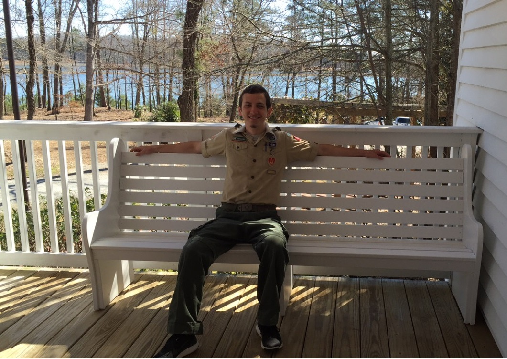

I joined BSA Troop 2000 when I was about 11 years old. During my years spent with the troop, I gained a wealth of knowledge and enjoyed countless fun experiences.
One of my greatest and proudest achievements in life has been earning the rank of Eagle Scout. In order to achieve this rank, one must complete a service project in addition to numerous other requirements. For my project, I led a group of volunteers to construct pew-style benches for a chapel at a nature preserve near my house.
|  |
| Me testing out one of the benches on the chapel porch. |